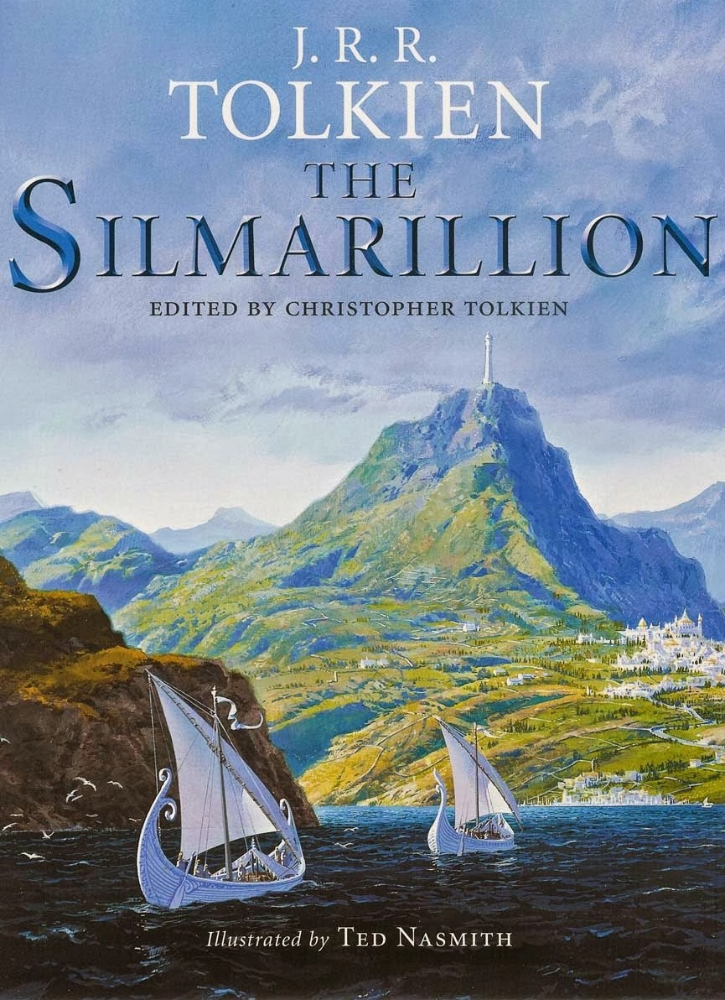

|
|
SİLMARİLLİONTolkien'in en önemli çalışması olarak kabul edilen Silmarillion, onun yarattığı dünyanın özüdür. Kökleri Hobbit'ten önceye uzanır ve Yüzüklerin Efendisi'nde şekillenmeye başlayan bir dünyanın yaratılış öyküsünü barındırarak, tüm Tolkien eserlerinin üzerine yerleşebileceği bir yapı oluşturur. Yaşamı boyunca üzerinde çalışmayı terk edemediği ve giderek büyüyüp gelişen bu eser ancak ölümünden dört yıl sonra oğlu tarafından yayımlanabildi. Hobbit ve Yüzüklerin Efendisi gibi orta çağda geçen fantastik bir hikayesi vardır. Romanda yine dünya geçmişinde yaşanmış olan bir Orta Dünya’da geçmektedir ve yine Hobbitlere dayanmaktadır. Silmarillion romanının en önemli özelliği ise Hobbit ve Yüzlüklerin Efendisi serilerinde yaşananların çok öncesine giderek Orta Dünya’nın yaratılışını ve sonradan Hobbit ve Yüzüklerin Efendisi serilerinde yaşananların temelini anlatmaktadır. Elflerin en beceriklisi olan Feanorun yarattığı üç Silmaril'in çalınmasıyla birlikte kadim dünyanın en kederli olayları gelişmeye başlar. Silmarillion, elflerin tanrılara isyan ederek Orta Dünya'ya sürülmelerini; orada insanlar ve Cücelerle birleşerek tanrıların en kötüsüne, Morgoth'a karşı verdiği umutsuz savaşı anlatır. Silmarillion üç parçadan oluşur:
Bu üç parça aslında ayrı çalışmalar iken, oğlu Christopher Tolkien'in isteğiyle beraber yayımlandı. Silmarillion, Tolkien'in diğer Orta Dünya eserleri gibi, Dünya'nın geçmişinde yaşanmış gibi kurgulanmıştı. Bu amaç doğrultusunda, Silmarillion Bilbo'nun Ayrıkvadi'de yazdığı 3 ciltlik Elfçe'den Çeviriler kitabından çevrilmiş olarak kurgulandı.Silmarillion, Kayıp Öyküler ve Tom Bombadil'in Maceraları gibi, Hobbit ve Yüzüklerin Efendisi'ni de barındıran, Orta Dünya Kozmolojisi'ni tanımlayan, kapsamlı fakat eksik, efsanevi hikâyelerden oluşmaktadır. Kitabın en göze çarpan bölümleri şunlardır:
|
|||||